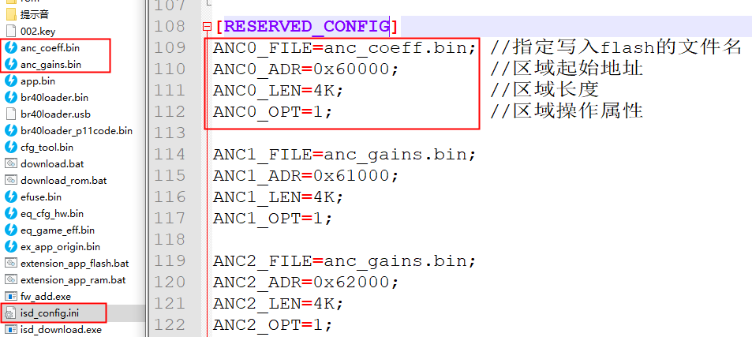
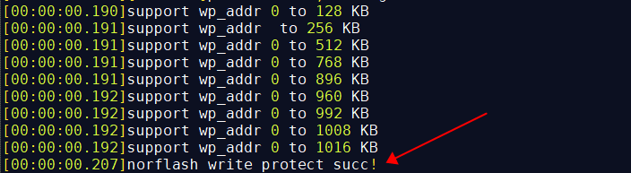
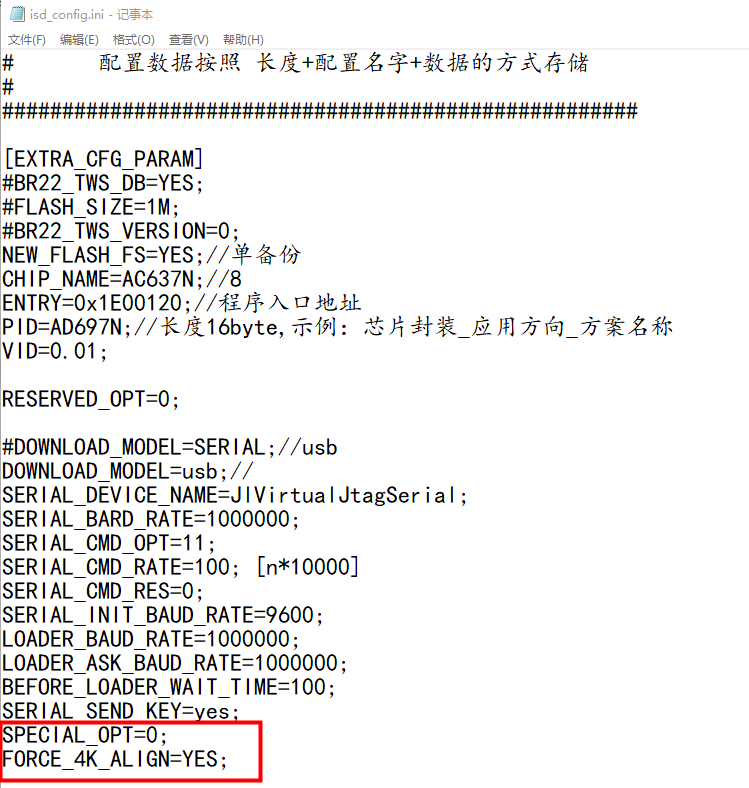
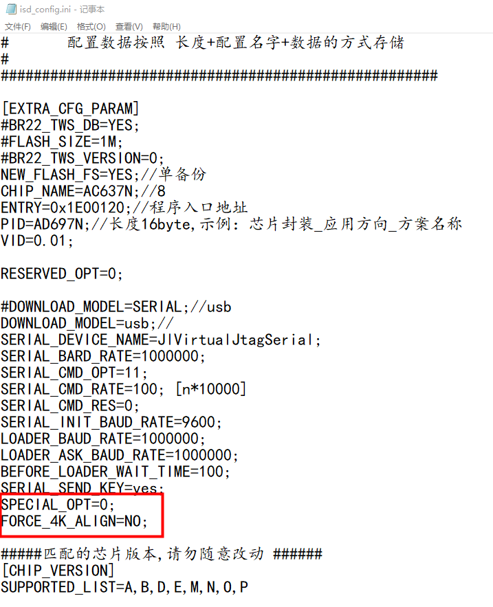

6.1. 常见isd_config.ini配置和烧录相关功能使用说明
更多详细的isd_config.ini 配置文件说明请参考: isd_config.ini 配置文件说明
6.1.1. flash的SPI参数配置
isd_config.ini支持配置flash的spi参数配置，配置如下：
[SYS_CFG_PARAM]
SPI = 2_3_0_0;
参数说明：
[SYS_CFG_PARAM]
SPI = X0_X1_X2_X3;
X0，表示spi的线宽，根据flash实际封装情况配置,一般默认就好：
0: 表示spi使用1线模式，写数据和读数据都是使用同一IO0/SO根线
1：表示spi使用标准双线模式，写数据使用IO0/SO线，读数据使用IO1/SI线
2：表示spi使用2线模式，写数据使用IO0/SO线，读数据使用IO0/SO和IO1/SI线
4：表示spi使用4线模式，写数据使用IO0/SO线，读数据使用IO0/SO、IO1/SI线、IO2(flash的WP)、IO3(flash的HOLD)线X1，表示SPI CLK的分配值,如芯片系统时钟跑48M，配置3，SPI的时钟则为48/(3+1)=12M：
X2,表示flash读数据使用的命令,一般默认配置就好，具体参考对应芯片flash的使用手册:
0：FAST_READ_OUTPUT_MODE
1：FAST_READ_IO_MODE
2：FAST_READ_IO_CONTINUOUS_READ_MODEX3,使用哪组SPI的IO口
0：使用第一组
1：使用第二组
Note
部分芯片不支持4线，或者不支持FAST_READ_IO_MODE读模式；
如果烧录过程报烧录失败，或者校验失败，可以检查一下对应的SPI配置是否正确！
6.1.2. 自定义资源文件烧录配置
要把isd_config.ini同级目录下的文件“anc_coeff.bin”，”anc_gains.bin”通过烧录器烧录到芯片flash指定位置, 参考如图配置如自定义资源文件烧录配置所示。

自定义资源文件烧录配置
如果[RESERVED_CONFIG]段的资源超过6个，点击批处理后会报错！ 把资源文件放置[RESERVED_EXPAND_CONFIG]段； 参考如图配置如超过6个自定义资源文件烧录配置所示。

超过6个自定义资源文件烧录配置
Note
每个资源文件可用引用同一个文件名的文件；但是XXX_FILE的文件名不能相同！
可以修改如ANC0_ADR=AUTO;自动地址，[RESERVED_CONFIG]段选项详细说明,请参考《[RESERVED_CONFIG]段选项说明》小节
6.1.3. flash参数烧录和保护参数生效测试配置
1.工具版本更新 SDK需要支持支持OTP_CFG配置，相关工具需要更新到以下版本(或之后版本)。
工具 |
最低版本 |
说明 |
|---|---|---|
isd_download.exe |
4.2.54 |
|
一拖二烧录器 |
2.27.7 |
|
一拖八烧录器 |
3.1.22 |
2.烧录器支持的型号和isd_config.ini配置
如下芯片，需要在isd_config.ini的[BURNER_PASSTHROUGH_CFG]配置段中增加FLASH_WRITE_PROTECT=YES配置，烧录时把flash写保护参数烧到指定区域，以及进行保护的有效性测试。
[BURNER_PASSTHROUGH_CFG]
FLASH_WRITE_PROTECT=YES;
不进行flash参数烧录和有效性测试，则可删除FLASH_WRITE_PROTECT字段，或者在isd_config.ini的[BURNER_PASSTHROUGH_CFG]配置段中增加FLASH_WRITE_PROTECT=NO配置。
[BURNER_PASSTHROUGH_CFG]
FLASH_WRITE_PROTECT=NO;
芯片型号 |
isd_config.ini需要的配置 |
|---|---|
AC632N、AE632N |
FLASH_WRITE_PROTECT=YES |
AC695X、AC635N、AC6083、AE695N |
FLASH_WRITE_PROTECT=YES |
AC696X、AC636N、AC608N |
FLASH_WRITE_PROTECT=YES |
AC702N |
FLASH_WRITE_PROTECT=YES |
AC706N |
FLASH_WRITE_PROTECT=YES |
AD14N、AC104N |
FLASH_WRITE_PROTECT=YES |
AD15N、AE15N |
FLASH_WRITE_PROTECT=YES |
AC700N、JL700N |
FLASH_WRITE_PROTECT=YES |
AC701N、JL701N |
FLASH_WRITE_PROTECT=YES |
如下芯片，需要在isd_config.ini的[EXTRA_CFG_PARAM]配置段中增加OTP_CFG_SIZE=512;配置，烧录时才写保护参数到flash和进行生效测试，否则烧录会报错；
[EXTRA_CFG_PARAM]
OTP_CFG_SIZE=512;
芯片型号 |
isd_config.ini需要的配置 |
|---|---|
AW30N |
OTP_CFG_SIZE=512 |
JL703N |
OTP_CFG_SIZE=512 |
AC700N、JL700N |
OTP_CFG_SIZE=512 |
AC704N |
OTP_CFG_SIZE=512 |
AC705N |
OTP_CFG_SIZE=512 |
AC706N |
OTP_CFG_SIZE=512 |
JL708N |
OTP_CFG_SIZE=512 |
AC82N，AD18N |
OTP_CFG_SIZE=512 |
AC129N,AD12N |
OTP_CFG_SIZE=512 |
AC701N、JL701N |
OTP_CFG_SIZE=512 |
JL709N、AC689N |
OTP_CFG_SIZE=512 |
AC710N |
OTP_CFG_SIZE=512 |
AC792N |
OTP_CFG_SIZE=512 |
AD24N |
OTP_CFG_SIZE=512 |
AC707N、AW34N |
OTP_CFG_SIZE=512 |
Note
OTP_CFG_SIZE=512；中512的值是可以变化的，具体依赖于当前使用的flash参数的配置信息大小；
AC707N、AW34N 、AC710N、AD24N型号芯片最小的值建议配置128;
其它型号最小值建议配置256;一般使用公版SDK默认配置的值即可；
3.烧录生成的.fw文件到芯片，写保护生效测试
把配置好带flash参数烧录功能的fw文件通过一拖二烧录器或一拖八烧录器烧录到芯片flash，
烧录过程烧录器对芯片flash的写保护功能进行一次写保护生效测试，测试通过才会允许烧录程序数据到芯片
烧录成功后，如SDK开启了打印，会打印如下图所示写保护功能生效的信息：

5.开发阶段启用flash写保护功能
如果需要在开发调试阶段启动FLASH写保护功能，请参考《开启使用写保护功能，DTR功能，多算法授权功能》
6.1.4. 256和4096对齐文件生成配置
1.256和4096对齐文件介绍 市面上所有的norflash支持4K字节擦除的操作，但是有一部分还支持256字节擦除；所以我们的烧录文件在组织过程中支持按4K字节对齐或者256字节对齐；
烧录统一产品，可能芯片存在不同对齐方式的芯片；在下载固件过程中，下载工具会根据样机的FLASH支持的最小擦除单元，实时选择对齐方式组织FLASH数据，这个功能是可以关闭的。
其中，
（1）256k对齐：节省flash空间 （2）如果方案需要支持在线升级，那么升级前后的烧录文件对齐方式应保持一致
2.生成FW只包含4096的烧录文件ini配置。如红色框住所示

3.生成FW只包含256对齐烧录文件ini配置，如红色框住所示, 然后强制升级工具插入一个支持256擦除的Flash芯片型号，识别到之后再点击批处理生成即可。

4.如何强制生成256字节对齐的FLASH BIN 添加“SPECIAL_OPT=0”以及“AREA_ALIGN=1”配置项；不建议使用该方式！
SPECIAL_OPT=0;
AREA_ALIGN=1; // 此配置项离线时有效,即编译下载时不连接样机
#FORCE_4K_ALIGN=YES; // 如果有,必须注释掉这个配置

5.生成FW包含256和4096对齐烧录文件，去掉如下部分点击批处理生成即可。
#SPECIAL_OPT=0;
#FORCE_4K_ALIGN=YES; # 如果有，必须注释掉这个配置
6.1.5. 文件透传如efuse.bin烧录配置
isd_config.ini按如下添加需要烧录的“efuse.bin”文件，”efuse.bin存在isd_config.ini文件同级目录
[FW_ADDITIONAL]
FILE_LIST=(file=efuse.bin:type=0xee)
如图所示：

Note
FILE_LIST支持多个文件，如：FILE_LIST=(file=ota.bin:type=100),(file=efuse.bin:type=0xee)
AC702N、AC704N、AC705N、AC129N、AD12N需要配置FLASH模式还是ROM模式,配置如下所示：
[BURNER_PASSTHROUGH_CFG]
REQUIRE_TARGET_FEATURE=FLASH;//flash+efuse
#REQUIRE_TARGET_FEATURE=EFUSE;//efuse only
6.1.6. lrc校准值烧录入flash配置
免晶振方案的芯片，配置lrc校准值写入FLASH UBOOT区域(只有LRC时钟偏差超过千分之五才写入)，参考如下
[SYS_CFG_PARAM]
LRC=-1; //配置，lrc校准值写入flash
6.1.7. 烧录器与SDK配置的芯片版本匹配
isd_config.ini按如图方式添加要支持的芯片版本（A~P版本）
[CHIP_VERSION]
SUPPORTED_LIST=A,B,C,D,M,N,O,P
如果烧录器烧录报对应版本的错误，原因可能：
1、可能是上述段没有添加支持该芯片版本
2、或者烧录器不允许该版本烧录
如需修改请联系杰理工程师 根据SDK实际情况支持该版本烧录
更多解释颗参考《 版本不匹配错误》